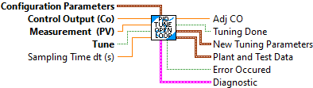
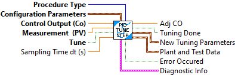

This routine can be used to make a step change to a PID control loop, track the results, and calculate PID tuning parameters. It wraps the NI LabVIEW PID auto-tuning functions for use with the WPILIB LabVIEW Math PID. This uses the CLOSED LOOP STEP type of test.
Warning -- This routine will modify the control output. Use it in such a manner to be able to stop the tuning if problems occur -- like running out of field space while tuning a drive motor.
Inputs:
-- Configuration Parameters -- cluster -- This contains the parameters defining the conditions of the test. Use the Pack routine to create this data cluster.
-- Control Output -- double -- The Control Output (CO) value from the output of the PID to be tuned.
-- Measurement (PV) -- double -- The Process Variable (PV) value used by the PID to be tuned.
-- Tune -- boolean -- When TRUE, tuning is performed..
-- Sampling time -- double -- Loop time in seconds. How fast the PID and this autotune function are executed. (Optional: Default 0.02 seconds)
Outputs:
-- Adj CO -- double -- The adjusted CO. This is sent to the actuator. (This vi is put between the PID and the actuator device)
-- Tuning Done -- boolean -- This is set to TRUE when tuning has completed. Depending on the PV noise, tuning may never be "DONE". However if the new tuning parameters are relatively constant, they can still be used.
-- New Tuning Parameters -- cluster --- Data cluster containing the calculated PID tuning parameters.
-- Plant and Test Data -- cluster -- Data cluster containing information describing the transfer function of the system being controlled (Plant).
-- Error Occured -- Boolean -- If TRUE, an error occured.
-- Diagnostic Info -- cluster -- This contains additional information about the test being perfromed.
Convert PID tuning parameters calculated by the NI LabVIEW PID autotuning from the NI Academic (classical) PID form to the non-interacting PID form used by the WPILIB LabVIEW Math library.
Inputs:
-- PID Gains NI Academic -- cluster -- PID tuning parameters in NI Academic form.
-- Kn -- double -- PID normalization constant. This is normally Max CO / Max PV (If normalization constant is not used, this value should be set to 1.0)
Outputs:
-- PID Gains -- cluster -- Converted PID tuning parameter gains.

This routine can be used to make a step change to a PID control loop, track the results, and calculate PID tuning parameters. It wraps the NI LabVIEW PID auto-tuning functions for use with the WPILIB LabVIEW Math PID. This uses the OPEN LOOP STEP type of test.
Warning -- This routine will modify the control output. Use it in such a manner to be able to stop the tuning if problems occur -- like running out of field space while tuning a drive motor.
Inputs:
-- Configuration Parameters -- cluster -- This contains the parameters defining the conditions of the test. Use the Pack routine to create this data cluster.
-- Control Output -- double -- The Control Output (CO) value from the output of the PID to be tuned.
-- Measurement (PV) -- double -- The Process Variable (PV) value used by the PID to be tuned.
-- Tune -- boolean -- When TRUE, tuning is performed..
-- Sampling time -- double -- Loop time in seconds. How fast the PID and this autotune function are executed. (Optional: Default 0.02 seconds)
Outputs:
-- Adj CO -- double -- The adjusted CO. This is sent to the actuator. (This vi is put between the PID and the actuator device)
-- Tuning Done -- boolean -- This is set to TRUE when tuning has completed. Depending on the PV noise, tuning may never be "DONE". However if the new tuning parameters are relatively constant, they can still be used.
-- New Tuning Parameters -- cluster --- Data cluster containing the calculated PID tuning parameters.
-- Plant and Test Data -- cluster -- Data cluster containing information describing the transfer function of the system being controlled (Plant).
-- Error Occured -- Boolean -- If TRUE, an error occured.
-- Diagnostic Info -- cluster -- This contains additional information about the test being perfromed.

Pack the individual PID AutoTune testing parameters into a data cluster for use with the PID AutoTune functions.
Inputs:
-- Control Constant Type -- enum -- Desired PID performance. This guides the calculation of the tuning parameters after the system transfer function (plant) has been determined. This choice determines how agressive the PID is in controlling the system error. Choices are:
- Ziegler Nicols - Fast
- Ziegler Nicols - Normal
- Ziegler Nicols - Slow
- CHR Regulator - 0% Overshoot
- CHR Regulator - 20% Overshoot
- CHR Servo - 0% Overshoot
- CHR Servo - 20% Overshoot
-- Type of Controller -- enum -- Type of PID. Choices are:
- P -- Proportional only
- PI -- Proportional and Integral only
- PID -- Full Proportional, Integral, Derivative.
-- CO Offset -- double -- The amount to step the control output to perform the test
-- Kn -- double -- Normaliztion constant. This is the same value that is used with the PID. This is normally Max CO / Max PV. If this isn't used, set the value to 1.0. (Optional. Default: 1.0)
-- Tuning Tolerance -- double -- Value used to determine if the tuning is complete. (Optional. Default 0.001)
-- Plant Tolerance -- double -- Value used to determine if the tuning process is complete. (Optional. Default: 0.001)
-- Newest Avg Time -- double -- Time in seconds to average most recent calculated tuning constants. (Optional. Default: 1.0 )
-- Long Avg Time -- double -- Time in seconds to average tuning constants to determine if the values are still changing. (Optional. Default 6.0 )
Outputs:
-- Configuration Parameters -- cluster -- This contains the parameters defining the conditions of the test. Use the Pack routine to create this data cluster.

This routine can be used to make a step change to a PID control loop, track the results, and calculate PID tuning parameters. It wraps the NI LabVIEW PID auto-tuning functions for use with the WPILIB LabVIEW Math PID.
Warning -- This routine will modify the control output. Use it in such a manner to be able to stop the tuning if problems occur -- like running out of field space while tuning a drive motor.
Inputs:
-- Procedure Type -- enum -- The type of tuning procedure to be used: Values are:
-- Open Loop Step -- This uses the frozen CO input when the test starts. A step change is made to the output. This is the recommended method
-- Closed Loop Step -- This uses the continually changing CO input and adds an offset value to this during the test.
-- Configuration Parameters -- cluster -- This contains the parameters defining the conditions of the test. Use the Pack routine to create this data cluster.
-- Control Output -- double -- The Control Output (CO) value from the output of the PID to be tuned.
-- Measurement (PV) -- double -- The Process Variable (PV) value used by the PID to be tuned.
-- Tune -- boolean -- When TRUE, tuning is performed..
-- Sampling time -- double -- Loop time in seconds. How fast the PID and this autotune function are executed. (Optional: Default 0.02 seconds)
Outputs:
-- Adj CO -- double -- The adjusted CO. This is sent to the actuator. (This vi is put between the PID and the actuator device)
-- Tuning Done -- boolean -- This is set to TRUE when tuning has completed. Depending on the PV noise, tuning may never be "DONE". However if the new tuning parameters are relatively constant, they can still be used.
-- New Tuning Parameters -- cluster --- Data cluster containing the calculated PID tuning parameters.
-- Plant and Test Data -- cluster -- Data cluster containing information describing the transfer function of the system being controlled (Plant).
-- Error Occured -- Boolean -- If TRUE, an error occured.
-- Diagnostic Info -- cluster -- This contains additional information about the test being perfromed.